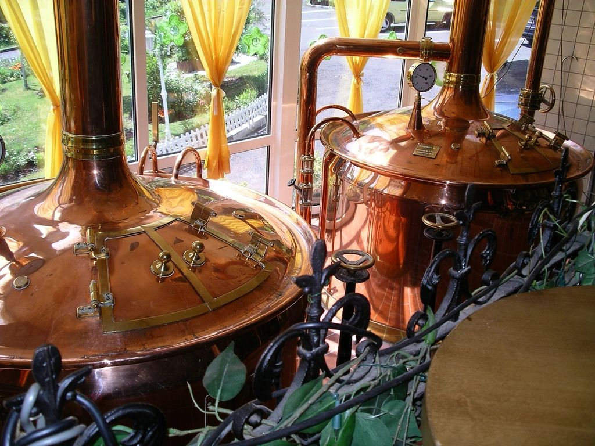

ఫార్మాట్ఆన్లైన్
వ్యవధి3 వారాలు
సెషన్లు6 లైవ్ సెషన్లు, ఒక్కొక్కటి 2 గంటలు
బ్యాచ్గరిష్ఠం 20
ఫీజు₹8,999

ఇది ఎవరి కోసం
ఇది మీ కోసమేనా?
- బ్రూపబ్ లేదా మైక్రోబ్రూవరీ ప్లాన్ చేస్తున్న ఫౌండర్లు
- బీర్ బిజినెస్ను అంచనా వేస్తున్న పెట్టుబడిదారులు
- మేనేజ్మెంట్లోకి అడుగుపెడుతున్న బ్రూవర్లు
కోర్సు ముగిసేసరికి
మీరు ఏం నేర్చుకుని వెళ్తారు.
- బ్రూపబ్, మైక్రోబ్రూవరీ, కాంట్రాక్ట్ బ్రూయింగ్ మధ్య ఎంచుకోవడం
- లీటరుకు ఖర్చు, బ్రేక్-ఈవెన్ లెక్కించడం
- మీ రాష్ట్రానికి అవసరమైన లైసెన్సుల మ్యాప్ తయారు చేయడం
- మార్కెట్కు చేరే దారిని ఎంచుకోవడం
మీ బోధకులు, సంప్రదించాల్సిన వ్యక్తి
ఈ కోర్సు ఎవరు బోధిస్తారు, ఎవరిని అడగాలి.

సంప్రదించాల్సిన వ్యక్తి
Chatty Girija
బీర్ పాడ్కాస్టర్ · క్రియేటివ్ స్ట్రాటజిస్ట్
Chatty కి WhatsApp చేయండిసిలబస్
వారం వారీగా.
3 వారాలు. ప్రతి వీకెండ్ రెండు లైవ్ సెషన్లు, వారానికి ఒక అసైన్మెంట్.
వారం 01. ప్లాన్, ఫైనాన్స్
- బ్రూపబ్, మైక్రోబ్రూవరీ లేదా కాంట్రాక్ట్ బ్రూయింగ్
- Capex: brewhouse, సెల్లార్, కూలింగ్, యుటిలిటీస్
- Opex, లీటరుకు ఖర్చు, ధర నిర్ణయం, బ్రేక్-ఈవెన్
- నిధుల ఎంపికలు
అసైన్మెంట్: మీ కాన్సెప్ట్ కోసం ఒక సాధారణ P&L తయారు చేయండి.
వారం 02. భారతదేశంలో లైసెన్సింగ్, నియంత్రణ
- ఎక్సైజ్ రాష్ట్రాల వారీగా నిర్ణయమవుతుంది, అది మీకు ఏమిటి అర్థం
- బ్రూపబ్, మైక్రోబ్రూవరీ లైసెన్సులు, FSSAI, పొల్యూషన్ కంట్రోల్ అనుమతి
- లేబుల్ రిజిస్ట్రేషన్, ట్రేడ్మార్క్లు, వాస్తవిక టైమ్లైన్లు
అసైన్మెంట్: మీ రాష్ట్రానికి లైసెన్స్ చెక్లిస్ట్, టైమ్లైన్ తయారు చేయండి.
వారం 03. మార్కెట్, బ్రాండ్, డిస్ట్రిబ్యూషన్
- పొజిషనింగ్, టాప్రూమ్ ఆర్థిక శాస్త్రం
- ఆన్-ట్రేడ్ వర్సెస్ ఆఫ్-ట్రేడ్, డిస్ట్రిబ్యూటర్లు, రాష్ట్ర నిబంధనలు
- Kegs లేదా cans, ఒక్కోటి ఎప్పుడు అర్థవంతం
అసైన్మెంట్: ఒక పేజీ బిజినెస్ ప్లాన్ను బ్యాచ్ ముందు ప్రెజెంట్ చేయండి.
ఇది ఎలా నడుస్తుంది
ఫార్మాట్, నిబంధనలు.
- షెడ్యూల్
- శని, ఆదివారాల్లో లైవ్, 12:00 PM నుంచి 2:00 PM IST. బ్యాచ్తో పరస్పర అంగీకారంతో సమయాలు మారవచ్చు.
- బ్యాచ్ సైజు
- గరిష్ఠంగా 20 మంది విద్యార్థులు, కాబట్టి ప్రతి ప్రశ్నకూ జవాబు దొరుకుతుంది.
- ఇందులో ఉన్నవి
- సెషన్ రికార్డింగ్లు, ప్రెజెంటేషన్ డెక్లు, వారపు అసైన్మెంట్లు, లెర్నింగ్ కిట్.
- సర్టిఫికెట్
- అన్ని అసైన్మెంట్లు సమర్పించి, కనీసం 80% లైవ్ సెషన్లకు హాజరైన తర్వాత Certificate of Completion.
- స్క్రీన్కు మించి
- సిఫారసు చేసిన మైక్రోబ్రూవరీ సందర్శనలు, మీరు చదువుతున్న కిట్ను నేరుగా చూడటానికి.
- ఫీజులు
- సైన్-అప్ సమయంలోనే పూర్తిగా చెల్లించాలి. ఏ డిస్కౌంట్లూ వర్తించవు. ఒకసారి నిర్ధారించిన కోర్సుల ప్యాకేజీని మార్చలేరు.
పూర్తి ఫ్లైట్ కావాలా? మొత్తం 29 కోర్సులు కలిపి 75 వారాలు పడతాయి. ఎన్రోల్ అయ్యేటప్పుడు మీ ప్యాకేజీని ఎంచుకుంటారు. చెల్లించే ముందు మొత్తం 29 కోర్సులను పోల్చి చూడండి, రీఫండ్ పాలసీ చదవండి.
ఇంకా చదవండి
మొదలుపెట్టే ముందు చదవండి

వ్యాపారం
భారతదేశంలో మైక్రోబ్రూవరీని ఎలా ప్రారంభించాలి
brewhouse అన్నిటికంటే తేలికైన భాగం. మీరు ఓపెన్ చేయగలరా లేదా అనేది లైసెన్సులు, కూలింగ్, వర్కింగ్ క్యాపిటల్ నిర్ణయిస్తాయి.

భారతదేశం
భారతదేశంలో క్రాఫ్ట్ బీర్ నిజంగా ఎలా పెరిగింది
ఒక రాష్ట్రంలో లైసెన్స్ నియమం మారడంతో ఇది మొదలైంది. ఆ తర్వాత జరిగినదంతా taprooms, వేడి, ఎంపిక కోరుకున్న ఒక తరం.

ఉద్యోగాలు
భారతదేశంలో బ్రూవర్ ఎలా కావాలి
ఇది సైన్స్ పునాది, పొద్దున్నే అలారం ఉన్న ప్రొడక్షన్ ఉద్యోగం. లోపలికి వెళ్లే నిజాయితీ దారి ఇక్కడ ఉంది.
చదవాల్సినవి
ఈ కోర్సుకు సంబంధించిన ప్రతి గైడ్.
ఈ కోర్సు కవర్ చేసే అంశాలపై 296 ఉచిత గైడ్లు ఉన్నాయి. మొదటి సెషన్కు ముందు వాటిలో ఏదైనా చదవండి.
వ్యాపారం 284
- బ్రూవరీ బ్రేక్ఈవెన్ వివరణ: నెలకు మీకు కావాల్సిన పరిమాణం
- బ్రూవరీ లైసెన్సింగ్: చాలా దేశాలు పంచుకునే దశలు
- బ్రూవరీకి వర్కింగ్ క్యాపిటల్: స్టాక్, సుంకం, నగదు అంతరం
- బ్రూపబ్ మార్జిన్లు: ఆహారం, బీర్ అమ్మకాల సమతుల్యత
- బ్రూపబ్ లేదా ప్రొడక్షన్ బ్రూవరీ: మీ మోడల్ ఎంచుకోవడం
- క్రాఫ్ట్ బ్రూవరీకి బిజినెస్ మోడల్ కాన్వాస్
- బ్రూవరీ స్థలం ఎంచుకోవడం: నీరు, విద్యుత్, డ్రెయిన్లు, పొరుగువారు
- హోస్ట్ బ్రూవరీకి కాంట్రాక్ట్ బ్రూయింగ్ ఆర్థికశాస్త్రం
- క్రాఫ్ట్ బీర్ పంపిణీ మోడల్స్: నేరుగా, డిస్ట్రిబ్యూటర్ ద్వారా లేదా రెండూ
- ఫ్రాంచైజీ, భాగస్వామ్యం లేదా సొంత బ్రూపబ్
- బ్రూవరీకి నిధులు: పొదుపు, రుణాలు, పెట్టుబడిదారులు, గ్రాంట్లు
- బ్రూవరీలను అమ్మేటప్పుడు విలువ ఎలా కడతారు
- బ్రూయింగ్ పరికరాల దిగుమతి: షిప్పింగ్, డ్యూటీలు, ఇన్స్టాలేషన్
- లీజ్ సంతకం చేసే ముందు బ్రూవరీ వ్యాపారం నేర్చుకోవడం
- మైక్రోబ్రూవరీ స్టార్ట్ అప్ ఖర్చులు: ఫౌండర్లు మర్చిపోయే అంశాలు
- మీరు పెరగని దేశంలో బ్రూపబ్ తెరవడం
- సీజనల్ డిమాండ్ కోసం బ్రూపబ్ ప్లాన్ చేయడం
- బ్రూపబ్లో ఒక పింట్ ధర నిర్ణయించడం: ఖర్చు, మార్జిన్, స్థానిక అలవాట్లు
- రిటైల్ షెల్ఫ్ల కోసం బీర్ ధర నిర్ణయం
- హోటళ్లు, రెస్టారెంట్లకు క్రాఫ్ట్ బీర్ అమ్మడం
- కాంట్రాక్ట్ బ్రూయింగ్తో బీర్ బ్రాండ్ మొదలుపెట్టడం
- ఆగ్నేయాసియాలో బ్రూపబ్ మొదలుపెట్టడం: ఫౌండర్లు దేనికి ప్లాన్ చేస్తారు
- ఆఫ్రికాలో మైక్రోబ్రూవరీ మొదలుపెట్టడం: ధాన్యం, నీరు, విద్యుత్
- కేవలం టాప్రూమ్ మాత్రమే ఉండే బ్రూవరీ మోడల్
- కెగ్, క్యాన్, పింట్ యూనిట్ ఎకనామిక్స్
- బ్రూవరీ ఫౌండర్ను ఇన్వెస్టర్లు ఏం అడుగుతారు
- సరైన వ్యక్తులను ఆకర్షించే హెడ్ బ్రూవర్ జాబ్ డిస్క్రిప్షన్ రాయడం
- నేను సొంత బ్రూవరీ ప్రారంభించాలనుకుంటున్నాను. ముందు ఏం నేర్చుకోవాలి?
- టెక్ పార్క్లో బ్రూపబ్, అది ఆధారపడే వారపు రోజుల వ్యాపారం
- టూరిస్ట్ పట్టణంలో సీజనల్ brewpub, ఆఫ్ సీజన్ను ఎలా తట్టుకోవాలి
- మీ బీర్ అందించే బార్ల అకౌంట్ మేనేజ్మెంట్
- రెసిపీ అభివృద్ధికి బ్రూపబ్లో పైలట్ సిస్టమ్ జోడించడం
- అమ్మకాలు పెరిగినప్పుడు రెండో బ్రూయింగ్ షిఫ్ట్ జోడించడం
- మొదటి కాంట్రాక్ట్ batch ముందు host బ్రూవరీని ఆడిట్ చేయడం
- మద్యం వ్యాపారాలకు బ్యాంకింగ్, పేమెంట్ గేట్వేలు
- ఖాళీ ట్యాంక్ స్థలం నింపడానికి కాంట్రాక్ట్ బ్రూవర్ కావడం
- టాప్రూమ్ ఆదాయ మార్గంగా బ్రూయింగ్ క్లాసులు
- బ్రూపబ్ నుంచి క్యాన్డ్ బీర్ను మార్కెట్కు తీసుకురావడం
- మీ బ్రూవరీని నడపడానికి ప్రొఫెషనల్ మేనేజర్ను తీసుకురావడం
- బ్రూవరీ రెండో వ్యాపార సంవత్సరానికి బడ్జెట్
- బ్రూవరీ కోసం నెలవారీ మేనేజ్మెంట్ అకౌంట్స్ ప్యాక్ తయారు చేయడం
- లీజు నుంచి ప్రారంభం వరకు బ్రూపబ్ ప్రాజెక్ట్ టైమ్లైన్ రూపొందించడం
- క్రాఫ్ట్ బ్రూవరీకి చిన్న ఫీల్డ్ సేల్స్ టీమ్ ఏర్పాటు
- బ్రూపబ్ కోసం గ్రెయిన్ మిల్, గ్రిస్ట్ కేస్ కొనుగోలు
- అమ్మకాలు పెరిగే కొద్దీ దశలవారీగా fermenters కొనడం
- కొత్త బాటిల్ షాప్ కోసం బీర్ రేంజ్ ఎంచుకోవడం
- మీ కాంట్రాక్ట్ బీర్ కోసం host బ్రూవరీని ఎంచుకోవడం
- పెరుగుతున్న బ్రూవరీకి keg washer ఎంచుకోవడం
- Brewpub బార్ కోసం serving tanks లేదా kegs ఎంచుకోవడం
- సొంత రాష్ట్రం తర్వాత ఏ రాష్ట్రాల్లో అమ్మాలో ఎంచుకోవడం
- లెక్కలు సరిపోనప్పుడు బ్రూపబ్ను సరైన పద్ధతిలో మూసివేయడం
- బ్రూవరీ, వంటగది వ్యర్థాలను అక్కడే కంపోస్ట్ చేయడం
- బ్రూవరీ క్యాపెక్స్ బడ్జెట్లో అత్యవసర నిల్వ, ఎంత ఉంచాలి
- కాంట్రాక్ట్ బ్రూ చేసిన బీర్ ఖర్చును కేస్కు లెక్కించడం
- బ్రూవరీలో సాయం చేసేలా బార్ సిబ్బందికి క్రాస్-ట్రైనింగ్
- బీర్ నాణ్యత తగ్గకుండా బ్రూపబ్లో ఖర్చులు తగ్గించడం
- క్రాఫ్ట్ బీర్ ప్యాకేజింగ్లో ప్లాస్టిక్ తగ్గించడం
- బలహీనమైన అకౌంట్కు బీర్ ఇవ్వడం ఎప్పుడు ఆపాలో నిర్ణయించడం
- రేంజ్ నుంచి ఏ బీర్లు తీసేయాలో నిర్ణయించడం
- వంటగది వ్యర్థాలు, వాడిన వంట నూనెను సరిగ్గా పారవేయడం
- చెడిపోయిన బ్యాచ్ను పారబోయాలా కలపాలా అనే వ్యాపార నిర్ణయం
- బ్రూవరీ సిబ్బందికి ఉద్యోగ ఒప్పందాలు, probation నిబంధనలు
- Tank సామర్థ్యం పెంచడం, సంఖ్యలు ఎప్పుడు దాన్ని సమర్థిస్తాయి
- భారతదేశం నుంచి బయటకు వెళ్లే బీర్కు ఎగుమతి పత్రాలు
- మీ brewhouse షిప్ అయ్యే ముందు factory acceptance testing
- విదేశాల్లో భారతీయ craft beer కు ఇంపోర్టర్ను కనుగొనడం
- ఉత్పత్తి బ్రూవరీకి ఫ్యాక్టరీ లైసెన్స్ పొందడం
- ఎక్సైజ్ శాఖ నుంచి బీర్ లేబుల్ ఆమోదం పొందడం
- Statutory audit కోసం బ్రూవరీ అకౌంట్స్ను సిద్ధం చేయడం
- ఒక రోజు బీర్ ఫెస్టివల్ స్టాల్ కోసం ఈవెంట్ లైసెన్సులు పొందడం
- బ్రూవరీ బోర్వెల్ కోసం భూగర్భ జల అనుమతి పొందడం
- బార్లు, రెస్టారెంట్ల నుంచి సమయానికి చెల్లింపులు పొందడం
- బ్రూపబ్లో బయట కూర్చునే ఏర్పాటుకు అనుమతి పొందడం
- బ్రూపబ్ ముందు భాగంలో సైన్బోర్డ్ అనుమతి పొందడం
- కొత్త బ్రూపబ్ కోసం గ్రీన్ బిల్డింగ్ ఎంపికలు
- బ్రూ డే మధ్యలో కరెంట్ పోతే ఏం చేయాలి
- Brewpub లో క్యాష్, కార్డ్, UPI చెల్లింపులు నిర్వహించడం
- బ్రూపబ్ పొరుగువారి శబ్ద ఫిర్యాదులను ఎదుర్కోవడం
- బీర్ అర్థం చేసుకునే brewpub చెఫ్ను నియమించడం
- బ్రూవరీ కోసం పార్ట్ టైమ్ ఫైనాన్స్ కంట్రోలర్ను నియమించడం
- ఫ్లోర్ను నడపగలిగే taproom మేనేజర్ను నియమించడం
- Brewpub తెరిచే ముందు ఎంత నగదు నిల్వ ఉంచాలి
- Packaged బీర్ ఇన్-స్టోర్ శాంప్లింగ్, దాని వల్ల ఏం సాధిస్తాం
- కీలక సరఫరాదారు విఫలమైనప్పుడు బ్రూవరీని నడుపుతూ ఉండటం
- పెద్ద బ్రూవరీలు పిలిచినప్పుడు మంచి బ్రూవర్లను నిలుపుకోవడం
- ఆకస్మిక తనిఖీ కోసం లైసెన్స్ పత్రాలను సిద్ధంగా ఉంచడం
- షేర్డ్ బిల్డింగ్లో కిచెన్ ఎగ్జాస్ట్, brewhouse ఆవిరి వెంట్లు
- వేర్వేరు నిబంధనలున్న ఎగుమతి మార్కెట్ల కోసం బీర్ లేబులింగ్
- హోమ్బ్రూయర్లు, కొత్త బ్రాండ్లకు బ్రూవరీ సమయాన్ని లీజుకు ఇవ్వడం
- నియంత్రణ కోల్పోకుండా మరో నగరం నుంచి బ్రూపబ్ నిర్వహించడం
- రద్దీగా ఉండే వీకెండ్ రాత్రుల్లో రిజర్వేషన్లు, వాక్-ఇన్లు నిర్వహించడం
- అన్ని బీర్లు ఒకేసారి అమ్ముడవుతున్నప్పుడు ట్యాంక్ స్థలం నిర్వహణ
- Manual లేదా automated brewhouse, మీకు ఎంత కంట్రోల్ అవసరం
- లీటర్ బీర్కు నీటి వినియోగం కొలవడం
- అమ్మకాలు కోల్పోకుండా బ్రూవరీని పెద్ద స్థలానికి మార్చడం
- కాంట్రాక్ట్ బ్రూయింగ్ నుంచి సొంత బ్రూవరీకి మారడం
- బ్రూపబ్ లీజులో అద్దె లేని ఫిట్ అవుట్ కాలం కోసం చర్చించడం
- మాల్ట్, హాప్ సరఫరాదారులతో చెల్లింపు షరతులపై చర్చించడం
- ఇతర బ్రూవరీల నుంచి కొనే క్రాఫ్ట్ బీర్ బార్ తెరవడం
- భారతదేశంలో క్రాఫ్ట్ బీర్ బాటిల్ షాప్ తెరవడం
- బ్రూపబ్ తెరిచే, మూసే చెక్లిస్టులు
- చిన్న బ్రూవరీకి ఆదాయ మార్గంగా చెల్లింపు బ్రూవరీ టూర్లు
- బ్రూపబ్ స్థలానికి పార్కింగ్, ప్రవేశ ప్రణాళిక
- హోటల్ యజమానితో కలిసి అక్కడే మైక్రోబ్రూవరీ నడపడం
- బ్రూవరీలో భాగస్వామ్య వివాదాలు, వాటిని ఎలా పరిష్కరించాలి
- బ్రూపబ్ వంటగదిలో ఫుడ్ సేఫ్టీ ఆడిట్ పాస్ కావడం
- బ్రూపబ్ వంటగది, గ్రెయిన్ స్టోర్లో పెస్ట్ కంట్రోల్
- భారతీయ craft beer కు మొదటి ఎగుమతి మార్కెట్ ఎంచుకోవడం
- ఎనిమిది ట్యాప్లు ఉన్న బ్రూపబ్ కోసం బ్రూయింగ్ షెడ్యూల్ ప్లాన్ చేయడం
- పండుగ సీజన్ రద్దీ కోసం బ్రూవరీ సామర్థ్యం ప్లాన్ చేయడం
- ఎక్సైజ్ చెల్లింపు తేదీల చుట్టూ నగదు ప్రణాళిక
- కొత్త బ్రూవరీలో ఫ్లోర్ డ్రెయిన్లు, వాలులు ప్లాన్ చేయడం
- వేసవిలో నీటి కొరత, ట్యాంకర్ సరఫరాకు సిద్ధపడటం
- పండుగలు, రద్దీ వారాంతాల్లో సిబ్బంది సెలవులు ప్లాన్ చేయడం
- ఫిట్ అవుట్కు ముందు బ్రూపబ్ విద్యుత్ లోడ్ ప్లాన్ చేయడం
- బ్రూవరీ సెల్లార్లలో వెంటిలేషన్, CO2 భద్రత ప్లానింగ్
- కొత్త బ్రూవరీకి నీటి సరఫరా, నిల్వ ప్లాన్ చేయడం
- రెగ్యులర్ కస్టమర్ల కోసం బీర్ సబ్స్క్రిప్షన్ ధర నిర్ణయం
- కోర్ రేంజ్తో పోల్చి కొత్త సీజనల్ బీర్ ధర నిర్ణయించడం
- బ్రూవరీ పెట్టుబడిదారుకు ఈక్విటీ వాటా ధర నిర్ణయం
- మార్జిన్ కోల్పోకుండా బీర్, ఫుడ్ కాంబోల ధర నిర్ణయించడం
- Landed cost ఆధారంగా ఎగుమతి బీర్ ధర నిర్ణయించడం
- కాంట్రాక్ట్ బ్రూయింగ్ ఒప్పందంలో మీ రెసిపీని కాపాడుకోవడం
- బ్రూవరీలో వర్షపు నీటి సేకరణ, అది ఎంత ఇవ్వగలదు
- రెగ్యులర్ కస్టమర్లను కోల్పోకుండా బీర్ ధరలు పెంచడం
- వ్యవస్థాపకుడిగా బ్రూవరీ బ్యాలెన్స్ షీట్ చదవడం
- భారతదేశంలో బ్రూహౌస్ కోసం స్టీమ్ బాయిలర్ నమోదు చేయడం
- మూతపడిన బ్రూపబ్ స్థలాన్ని కొత్త యజమానుల కింద తిరిగి తెరవడం
- రూఫ్టాప్ బ్రూపబ్లు, నిండిన ట్యాంకుల నిర్మాణ భారం
- పర్యాటకుల కోసం కొండ ప్రాంత రాష్ట్రంలో బ్రూపబ్ నడపడం
- Craft beer బాటిల్ షాప్ ఫ్రిజ్ రొటేషన్ నిర్వహించడం
- బ్రూపబ్లో నెలవారీ స్టాక్ టేక్ నిర్వహించడం
- బ్రూవరీలో వారానికోసారి ఆపరేషన్స్ మీటింగ్ నిర్వహించడం
- సంతకం చేసే ముందు ఇంటి యజమానిపై due diligence
- చిన్న బ్రూవరీ టీమ్లో పర్ఫార్మెన్స్ రివ్యూలు నిర్వహించడం
- కొత్త తాగుబోతులను చేరుకోవడానికి ఇతర బార్లలో ట్యాప్ టేకోవర్లు
- బ్రూపబ్ వంటగదిని మీరే నడపడం లేదా లీజుకు ఇవ్వడం
- కెగ్లు, కేసుల కోసం సొంత డెలివరీ వ్యాన్ నడపడం
- ప్రతి కొత్త బ్రూవరీ ఉద్యోగికి మొదటి రోజే అవసరమైన భద్రతా శిక్షణ
- లాభం వచ్చే బ్రూపబ్కు సీటింగ్ సామర్థ్యం, కవర్లు
- భారతదేశంలో పెళ్లిళ్లు, ప్రైవేట్ ఈవెంట్లలో బీర్ అమ్మడం
- క్లబ్లు, జింఖానాలకు craft beer అమ్మడం
- మీ రాష్ట్రంలోనే ఇతర బార్లకు కెగ్లు అమ్మడం
- మత్తులో ఉన్న అతిథుల కోసం responsible service పాలసీ
- Brewpub కోసం సిబ్బంది డ్రింకింగ్ పాలసీ
- ఇతర బార్ల కోసం హోల్సేల్ కెగ్ ధర నిర్ణయించడం
- కెగ్ డిపాజిట్లు నిర్ణయించడం, బార్ల నుంచి కెగ్లు తిరిగి రాబట్టడం
- మాల్ట్, హాప్స్, ఈస్ట్ రీఆర్డర్ పాయింట్లు నిర్ణయించడం
- Brewpub టీమ్ సాధించగలిగే టార్గెట్లు పెట్టడం
- నానో బ్రూవరీ ఏర్పాటు, అది వాస్తవంగా ఎంత సంపాదించగలదు
- మరో బీర్ కంపెనీతో బ్రూవరీ పంచుకోవడం
- దిగుమతి చేసుకున్న brewhouse ను భారతదేశంలో షిప్ చేసి ఇన్స్టాల్ చేయడం
- రిఫ్రిజిరేటెడ్ కంటైనర్లలో బీర్ షిప్ చేయడం
- చిన్న బ్రూవరీలో షెల్ఫ్పై ఉంచుకోవాల్సిన స్పేర్ పార్ట్స్
- బ్రూపబ్ పక్కన బీర్, ఫుడ్ డెలివరీ కిచెన్ ప్రారంభించడం
- బ్రూపబ్ బ్రూహౌస్కు స్టీమ్ వర్సెస్ ఎలక్ట్రిక్ హీటింగ్
- బ్రూవరీ వ్యవస్థాపకుడిగా రోజువారీ కార్యకలాపాల నుంచి తప్పుకోవడం
- కుటుంబం నడిపే బ్రూవరీలో వారసత్వ ప్లానింగ్
- Brewpub లో టేబుల్ టర్న్స్, అవి ఆదాయాన్ని ఎలా ప్రభావితం చేస్తాయి
- పెద్ద డ్రింక్స్ కంపెనీ నుంచి వ్యూహాత్మక భాగస్వామిని తీసుకోవడం
- కట్టుబడే ముందు పాప్ అప్ నైట్లతో బ్రూపబ్ ఆలోచనను పరీక్షించడం
- Brewpub లో ప్రతి బీర్కు gross margin ట్రాక్ చేయడం
- Brewpub కోసం ట్రేడ్ లైసెన్స్, షాప్ రిజిస్ట్రేషన్ దశలు
- మెనూతో బీర్ జత చేసేలా కిచెన్, బార్ టీమ్లకు శిక్షణ
- బీర్ టెస్టింగ్ కోసం బయటి ల్యాబ్ వాడడం
- పరికరాల సరఫరాదారుల నుంచి డిమాండ్ చేయాల్సిన వారంటీ, సర్వీస్ షరతులు
- గ్లాసులో బీర్ అందించడానికి తూనికలు, కొలతల నియమాలు
- బ్రూపబ్ ఉత్పత్తి బ్రూవరీగా మారినప్పుడు ఏమి మారుతుంది
- లైసెన్స్ రెన్యూవల్ ఆలస్యమైతే ముందుగా ఎవరికి కాల్ చేయాలి
- చిన్న బ్రూవరీలో ఒక పింట్ కార్బన్ ఫుట్ప్రింట్ లెక్కించడం
- బ్రూపబ్ డిజైన్పై ఆర్కిటెక్ట్తో కలిసి పని చేయడం
- బ్రూవరీ కోసం క్రైసిస్ ప్లాన్ రాయడం
- Brewpub కోసం స్టాఫ్ హ్యాండ్బుక్ రాయడం
- చిన్న బ్రూవరీ కోసం వార్షిక ప్లాన్ రాయడం
- Brewhouse టెండర్ కోసం ఎక్విప్మెంట్ స్పెసిఫికేషన్ రాయడం
- Brewpub లో ప్రతి పాత్రకు జాబ్ డిస్క్రిప్షన్లు రాయడం
- బ్రూపబ్ బార్ లైసెన్స్కు స్పిరిట్స్, వైన్, కాక్టెయిల్స్ జోడించడం
- భారతీయ బ్రూవరీలకు వార్షిక లైసెన్స్ రెన్యూవల్స్, వాటిని ఎలా ప్లాన్ చేయాలి
- భారతదేశంలో బ్రూవరీకి బ్యాంక్ లోన్లు, అప్పిచ్చేవారు ఏమి అడుగుతారు
- బ్రూవరీ మొదటి ఏడాదిలో క్యాష్ ఫ్లో
- బ్రూవరీ కోసం కో-ఫౌండర్, పార్ట్నర్ ఒప్పందాలు
- లాభం తెచ్చే బ్రూపబ్ పని వేళలు, స్టాఫ్ షిఫ్టులు
- స్ప్రెడ్షీట్లో ట్యాబ్ వారీగా బ్రూవరీ ఫైనాన్షియల్ మోడల్ తయారు చేయడం
- భారతదేశంలో సెకండ్ హ్యాండ్ brewhouse కొనడం, ఏమి తనిఖీ చేయాలి
- ఇప్పటికే ఉన్న brewpubను కొనడం, ముందుగా చేయాల్సిన due diligence
- బ్రూవరీ కోసం అకౌంటెంట్, బుక్కీపింగ్ సెటప్ ఎంచుకోవడం
- భారతీయ బ్రూవరీకి కంపెనీ, LLP లేదా పార్ట్నర్షిప్: ఏ నిర్మాణం
- బ్రూయింగ్ పరికరాలపై డిప్రిసియేషన్, అది ట్యాక్స్కు అర్థం ఏమిటి
- బడ్జెట్లో పెట్టాల్సిన ఎక్సైజ్ బాండ్లు, బ్యాంక్ గ్యారంటీలు, డిపాజిట్లు
- బ్రూవరీ ఫౌండర్లకు ఎగ్జిట్ ఆప్షన్లు, అమ్మకం నుంచి బైఅవుట్ వరకు
- భారతదేశం నుంచి క్రాఫ్ట్ బీర్ ఎగుమతి, దానికి కావాల్సిన షెల్ఫ్ లైఫ్
- brewpub కాన్సెప్ట్ను ఫ్రాంచైజ్ చేయడం, అది నిజంగా ఎప్పుడు పనిచేస్తుంది
- క్రాఫ్ట్ బ్రూవరీగా రాష్ట్ర లిక్కర్ రిటైల్లో లిస్ట్ అవ్వడం
- brewpub పీక్ నెలల కోసం సీజనల్, క్యాజువల్ స్టాఫ్ను నియమించడం
- మీ మొదటి హెడ్ బ్రూవర్ను నియమించడం
- భారత్లో బ్రూపబ్ బిల్లుపై GST, ఎక్సైజ్ ఎలా విభజించబడతాయి
- దిగుమతి చేసిన లేదా భారత్లో తయారైన brewhouse: ఖర్చు, సర్వీస్ పరంగా పోలిక
- భారతదేశంలో బ్రూవరీకి ఇండస్ట్రియల్ ఏరియా లేదా కమర్షియల్ జోన్
- భారతదేశంలో బ్రూవరీకి ఇన్సూరెన్స్
- చిన్న బ్రూవరీ వ్యాపారం కోసం రిస్క్ రిజిస్టర్ నిర్వహించడం
- భారతీయ వేసవిలో బ్రూవరీ నుంచి బార్ వరకు బీర్ను చల్లగా ఉంచడం
- బ్రూవరీ ఎక్విప్మెంట్ను లీజుకు తీసుకోవడం లేదా పూర్తిగా కొనడం
- బ్రూపబ్ కోసం స్థలాన్ని లీజుకు తీసుకోవడం
- భారతదేశంలో brewpub కోసం లైవ్ మ్యూజిక్, ఎంటర్టైన్మెంట్ లైసెన్సులు
- మొబైల్ క్యానింగ్ సర్వీసులు, చిన్న బ్రూవరీ ఎప్పుడు వాడాలి
- భారతీయ నగరంలో బ్రూపబ్ టీమ్కు నెలవారీ జీతాల ఖర్చు
- బ్రూపబ్ నుంచి ప్యాకేజ్డ్ బీర్కు మారడం, అందులో తీసుకోవాల్సిన నిర్ణయాలు
- భారతదేశంలో క్రాఫ్ట్ బీర్ కోసం డిస్ట్రిబ్యూటర్ అగ్రిమెంట్ బేరమాడటం
- రెండో brewpub అవుట్లెట్ తెరవడం, నంబర్లలో ఏం మారుతుంది
- Pint, schooner లేదా half: టాప్రూమ్ కోసం సర్వ్ సైజులు ఎంచుకోవడం
- ఏంజెల్ ఇన్వెస్టర్లకు బ్రూవరీని పిచ్ చేయడం, వాళ్లు చూసే నంబర్లు
- బ్రూపబ్ ప్రారంభ నెలను ప్లాన్ చేయడం
- బ్రూపబ్ల కోసం POS, ఇన్వెంటరీ సాఫ్ట్వేర్
- జనరేటర్, సోలార్, గ్రిడ్తో బ్రూవరీకి పవర్ బ్యాకప్
- లాభం కోసం బీర్ flights, టేస్టింగ్ ప్యాడిల్స్కు ధర నిర్ణయించడం
- రెస్టారెంట్లు, హోటళ్ల కోసం ప్రైవేట్ లేబుల్ బీర్, ఆ డీల్ ఎలా పనిచేస్తుంది
- బ్రూవరీ కోసం స్నేహితులు, కుటుంబం నుంచి సరైన పద్ధతిలో డబ్బు సేకరించడం
- ఫౌండర్గా బ్రూవరీ ప్రాఫిట్ అండ్ లాస్ స్టేట్మెంట్ చదవడం
- రెవెన్యూలో వాటాగా అద్దె, brewpub ఎంత భరించగలదు
- రూపాయి మారకం రేట్లు, దిగుమతి చేసే బ్రూయింగ్ పదార్థాల ఖర్చు
- భారత్లో రాష్ట్ర సరిహద్దులు దాటి బీర్ అమ్మడం, అవసరమైన పర్మిట్లు
- లిస్టింగ్లు, పేమెంట్ షరతులతో హోటళ్లకు క్రాఫ్ట్ బీర్ అమ్మడం
- భారతీయ బ్రూపబ్లో సర్వీస్ ఛార్జ్, టిప్స్, స్టాఫ్ ప్రోత్సాహకాలు
- చిన్న బ్రూవరీ కంపెనీకి బోర్డు, సలహాదారులను ఏర్పాటు చేయడం
- భారతదేశంలో tier 2 నగరంలో బ్రూవరీ మొదలుపెట్టడం, ఆశించాల్సిన డిమాండ్
- భారతదేశంలో టేక్అవే బీర్, growler నియమాలు
- చిన్న బ్రూవరీలో వాటా కొనే లేదా అమ్మే ముందు దాని విలువ లెక్కించడం
- భారతదేశంలో బీర్ హోమ్ డెలివరీ మొదలుపెట్టే ముందు ఏమి చూసుకోవాలి
- బ్రూవరీలో వర్కింగ్ క్యాపిటల్: స్టాక్, kegs, ట్రేడ్ క్రెడిట్
- భారతదేశంలో బ్రూపబ్ బ్రేక్-ఈవెన్ పాయింట్ లెక్కించడం
- బ్రూపబ్ లేఅవుట్: కిచెన్, బ్రూహౌస్, బార్
- చేతులతో నిర్మించింది: గగన్ దీప్ మొదటి brewhouse ఫౌండర్లకు నేర్పేది
- ఆంధ్రప్రదేశ్ క్రాఫ్ట్ బీర్, మైక్రోబ్రూవరీ నిబంధనలు, October 2026 నాటికి
- బార్ లేదా రెస్టారెంట్గా మహారాష్ట్రలో క్రాఫ్ట్ బీర్ kegs కొనడం
- చండీగఢ్ క్రాఫ్ట్ బీర్, మైక్రోబ్రూవరీ నిబంధనలు, October 2026 నాటికి
- భారతదేశంలో రాష్ట్రాల వారీగా క్రాఫ్ట్ బీర్, మైక్రోబ్రూవరీ నిబంధనలు, October 2026
- బ్రూవరీ లేకుండా మహారాష్ట్రలో రెస్టారెంట్, హోటల్ లేదా పిజ్జేరియా క్రాఫ్ట్ బీర్ను ట్యాప్లో ఎలా పోయవచ్చు
- ఢిల్లీ క్రాఫ్ట్ బీర్, మైక్రోబ్రూవరీ నిబంధనలు, October 2026 నాటికి
- గోవా క్రాఫ్ట్ బీర్, మైక్రోబ్రూవరీ నిబంధనలు, October 2026 నాటికి
- హర్యానా క్రాఫ్ట్ బీర్, మైక్రోబ్రూవరీ నిబంధనలు, October 2026 నాటికి
- హిమాచల్ ప్రదేశ్ క్రాఫ్ట్ బీర్, మైక్రోబ్రూవరీ నిబంధనలు, October 2026 నాటికి
- కర్ణాటక క్రాఫ్ట్ బీర్, మైక్రోబ్రూవరీ నిబంధనలు, October 2026 నాటికి
- కేరళ క్రాఫ్ట్ బీర్, మైక్రోబ్రూవరీ నిబంధనలు, October 2026 నాటికి
- మధ్యప్రదేశ్ క్రాఫ్ట్ బీర్, మైక్రోబ్రూవరీ నిబంధనలు, October 2026 నాటికి
- మహారాష్ట్ర బీర్ ఎక్సైజ్, లైసెన్సులు, October 2026 నాటికి
- పంజాబ్ క్రాఫ్ట్ బీర్, మైక్రోబ్రూవరీ నిబంధనలు, October 2026 నాటికి
- రాజస్థాన్ క్రాఫ్ట్ బీర్, మైక్రోబ్రూవరీ నిబంధనలు, October 2026 నాటికి
- మహారాష్ట్రలో క్రాఫ్ట్ బీర్ ట్యాప్లను నిబంధనల ప్రకారం, చక్కగా నడపడం
- తమిళనాడు క్రాఫ్ట్ బీర్, మైక్రోబ్రూవరీ నిబంధనలు, October 2026 నాటికి
- తెలంగాణ క్రాఫ్ట్ బీర్, మైక్రోబ్రూవరీ నిబంధనలు, October 2026 నాటికి
- ఉత్తరప్రదేశ్ క్రాఫ్ట్ బీర్, మైక్రోబ్రూవరీ నిబంధనలు, October 2026 నాటికి
- ఉత్తరాఖండ్ క్రాఫ్ట్ బీర్, మైక్రోబ్రూవరీ నిబంధనలు, October 2026 నాటికి
- పశ్చిమ బెంగాల్ క్రాఫ్ట్ బీర్, మైక్రోబ్రూవరీ నిబంధనలు, October 2026 నాటికి
- అవసరం రాకముందే బీర్ రీకాల్ ప్లాన్ చేయడం
- బ్రూయింగ్లో బర్న్అవుట్: మంచి బ్రూవర్ను కోల్పోయే ముందే గుర్తించడం
- బ్రూవరీకి ఫ్లాగ్షిప్ బీర్ ఎందుకు అవసరం, దాన్ని ఎప్పుడు ఆపాలి
- Keg ట్రాకింగ్: kegs ను, వాటిలోని డబ్బును కోల్పోవడం ఆపండి
- చిన్న బ్రూవరీ కోసం ప్రివెంటివ్ మెయింటెనెన్స్ ప్లాన్
- బ్రూపబ్లో ఆహారం: మెనూ డిజైన్, మార్జిన్లు
- బ్రూవరీలు ఎందుకు విఫలమవుతాయి
- బ్రూవరీ స్థలాన్ని ఎంచుకోవడం
- బ్రూవరీకి నిధులు సమకూర్చడం
- భారతదేశంలో క్రాఫ్ట్ బీర్ మార్కెట్ ట్రెండ్లు
- బ్రూయింగ్లో సస్టైనబిలిటీ
- బ్రూవరీ వ్యర్థాలు, స్పెంట్ గ్రెయిన్
- బ్రూవరీ యుటిలిటీస్: నీరు, విద్యుత్, ఆవిరి
- చిన్న బ్రూవరీకి సిబ్బంది
- Kegs లేదా cans: బిజినెస్ కోణం
- ఆన్-ట్రేడ్ వర్సెస్ ఆఫ్-ట్రేడ్
- భారతదేశంలో బీర్ డిస్ట్రిబ్యూషన్
- బ్రూవరీ కంప్లయన్స్ చెక్లిస్ట్
- బ్రూవరీ పరికరాలు కొనడం
- FSSAI, బీర్
- భారతదేశంలో బీర్పై ఎక్సైజ్ డ్యూటీ
- బ్రూవరీ బిజినెస్ ప్లాన్ రాయడం
- టాప్రూమ్ ఆర్థిక శాస్త్రం
- క్రాఫ్ట్ బీర్ ధర నిర్ణయం
- మీ లీటరుకు ఖర్చు లెక్కించడం
- మీ brewhouse సైజు ఎంచుకోవడం
- భారతదేశంలో మైక్రోబ్రూవరీకి ఎంత ఖర్చవుతుంది
- జిప్సీ బ్రూయింగ్, వివరంగా
- భారతదేశంలో కాంట్రాక్ట్ బ్రూయింగ్
- బ్రూపబ్నా, మైక్రోబ్రూవరీనా?
- భారతదేశంలో మైక్రోబ్రూవరీ లైసెన్స్ పొందడం
కెరీర్లు 5
పదార్థాలు 4
పరిశ్రమ అప్డేట్ 2
Brewery Business Management లో మీ సీటు రిజర్వ్ చేసుకోండి.
ప్రతి బ్యాచ్లో గరిష్ఠంగా 20 మంది. ఇప్పుడే ఎన్రోల్ అవ్వండి లేదా WhatsApp లో మమ్మల్ని అడగండి.